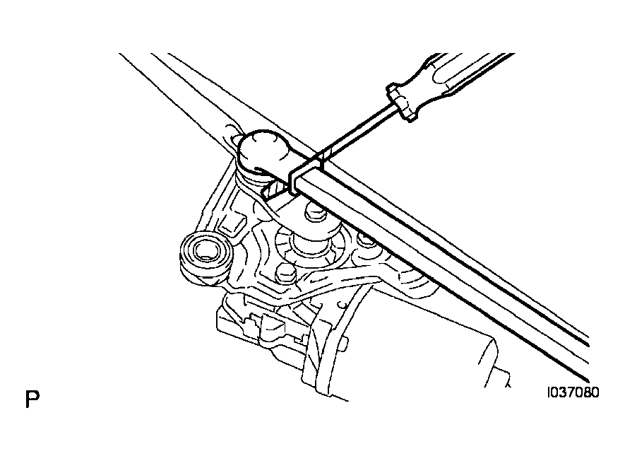

Front Wiper Motor And Link: Removal
- DISCONNECT CABLE FROM NEGATIVE BATTERY TERMINAL CAUTION: Wait at least 90 seconds after disconnecting the cable from the negative (-) battery terminal to prevent airbag and seat belt pretensioner activation.
- REMOVE FRONT WIPER ARM HEAD CAP
- REMOVE FRONT WIPER ARM AND BLADE ASSEMBLY RH
- REMOVE FRONT WIPER ARM AND BLADE ASSEMBLY LH
- REMOVE HOOD TO COWL TOP SEAL
- Using a clip remover, remove the 5 clips and seal.
- REMOVE COWL TOP VENTILATOR LOUVER RH
- Using a clip remover, remove the 4 clips.
- Detach the 5 claws and remove the ventilator louver.
- REMOVE COWL TOP VENTILATOR LOUVER LH
- Using a clip remover, remove the 4 clips.
- Detach the 5 claws and remove the ventilator louver.
- REMOVE WINDSHIELD WIPER MOTOR AND LINK ASSEMBLY
- Disconnect the connector.
- Remove the 3 bolts and the wiper motor and link.
- REMOVE WINDSHIELD WIPER MOTOR ASSEMBLY

Courtesy of © TOYOTA, LICENSE AGREEMENT TMS1002- Using a screwdriver, disconnect the 2 rods at the crank arm pivot of the wiper motor.
HINT:
Tape the screwdriver tip before use to avoid damage.
- Remove the 3 bolts and the wiper motor.
- Using a screwdriver, disconnect the 2 rods at the crank arm pivot of the wiper motor.